スマホがそのままレジになるシステム「FES POS」を、あなたのクラス用に用意する手順です。
プログラミングは必要ありません。インターネットのサービスに登録して、画面の指示どおりに
入力・コピーしていくだけです。
FES POS は、3つの無料サービスを組み合わせて動いています。それぞれにアカウントを作って、つなげていきます。
みんなのスマホは、ブラウザ（Safari や Chrome）で Render のアドレス（例：https://fes-pos-abcd.onrender.com）を開いて使います。
アプリをインストールする必要はありません。
| サービス | 無料でできること | 気をつけること |
|---|---|---|
| GitHub | プログラムを置いておける（自分だけが見られる「Private」でよい） | 特になし |
| Render | アプリを1つ動かせる（月750時間・通信は月5GBまで）。このシステムなら2日間の文化祭で数百MB程度 | 15分だれも使わないと休止し、次に開いたとき動き出すまで約1分かかる |
| TiDB Cloud | データベースを作れる（保存は5GiB・処理は月5000万RUまで）。このシステムの使用量は、その数%程度 | 特になし |
5章で入力する4つのことを、先に決めておきます。12章の記入シートに書いておくと楽です（ひみつのものは書かないでください）。
レジを使う人全員の番号と名前です。番号は、ログインのときに入力する数字で、4けたがおすすめです
（例：2年3組1番 → 2301）。名前は画面の表示や記録に使います。
書き方は、「番号:名前」を「,」（カンマ）でつなげるだけです。
=A1&":"&B1 と入れて下までコピーします。
空いているセルに =TEXTJOIN(",",TRUE,C1:C40) と入れると、1行につながった名簿ができます。それをコピーして使います。
管理者は、商品の登録・PINの承認・売上の管理などができる人です。名簿にある番号の中から 1人か2人 決めます。
2人なら 2301,2302 のように書きます。
アプリを開くと最初に聞かれる言葉です。クラスの人だけに教えます。外の人が入ってこられないようにするためのものなので、
推測されにくいものにしてください（クラス名や「password」などは避ける。例：sakura-2027 のように、言葉と数字を組み合わせる）。
ログイン画面に表示される名前です（例：経高祭 2年3組）。合言葉を入れた人にだけ見えます。
2301:見本 一郎,…）・管理者の番号（2301）・合言葉・店の名前、の4つが決まったら次へ進みます。
先輩が用意した「テンプレート」から、あなた専用のコピー（リポジトリ）を作ります。中身は自動でコピーされるので、ファイルを触る必要はありません。
https://github.com を開き、Sign up からメールアドレスで登録します（無料）。すでに持っていればログインします。https://github.com/snapdragon0106/fes-pos-template）。fes-pos-2027）／
公開範囲は Private を選び、Create repository を押します。https://github.com/あなたのユーザー名/fes-pos-2027 のようなページができ、ファイルがたくさん並んでいれば成功です。
このページは5章で使います。
売上や在庫を保存するデータベースを作り、その「接続先」（住所とパスワードをまとめた1行の文字）を作ります。
https://tidbcloud.com を開き、Sign Up から登録します。Googleアカウントでも登録できます。
最初にいくつか質問が出たら、適当に答えて進めてかまいません。fes-pos）gateway01.ap-northeast-1.prod.aws.tidbcloud.com のような長い文字）、
USERNAME（xxxxxxxx.root のような文字）、PASSWORD の3つをメモします。PORT はふつう 4000 です。メモした値を、次の形に当てはめて1行にします。これが「接続先」（DATABASE_URL）です。
例（実際の値は人によって違います）：
fespos は、データベースの名前です。まだ無くても大丈夫です（アプリが最初に起動したとき自動で作ります）:（コロン）と @（アットマーク）の位置をまちがえないようにしてください。パスワードに @ : / ? # % などの記号が入っていると読めないので、Reset Password で作り直してください?ssl=… 付きの文字を使ってもかまいません3章のリポジトリを Render につなげて、アプリを動かします。設定はリポジトリに入っている設計図（render.yaml）が自動で読み込むので、入力するのは5か所だけです。
https://render.com を開き、Get Started → GitHub を選んで、GitHub のアカウントで登録します。
「Render に GitHub へのアクセスを許可しますか」と聞かれたら許可します。fes-pos-2027）の Connect を押します。fes-pos）を入れます。Branch は main のままです。| 入力欄の名前 | 入れるもの | 例 |
|---|---|---|
DATABASE_URL | 4章で組み立てた接続先 | mysql://…:4000/fespos |
POS_MEMBERS | 名簿（番号:名前 をカンマでつなげたもの） | 2301:見本 一郎,2302:見本 花子 |
POS_ADMIN_IDS | 管理者の番号 | 2301 |
POS_ACCESS_CODE | 合言葉 | sakura-2027 |
POS_SHOP_NAME | 店の名前 | 経高祭 2年3組 |
JWT_SECRET と POS_ADMIN_RECOVERY_CODE は、Render が自動で作るので入力しなくてかまいません（入力欄が出ない場合もあります）。
https://fes-pos-xxxx.onrender.com が、アプリのアドレスです。
これをクラスのみんなに伝えます（合言葉とは別に伝えるのがおすすめ）。新しいお店には、まだ誰のPIN（4けたの暗証番号）もありません。管理者だけは、Render が作った「復旧コード」を使って最初のPINを決めます。
スマホかパソコンで、5章のアドレスを開きます。合言葉を入れて 入場する を押します。
開くまで1分ほどかかることがあります（休止からの起動）。
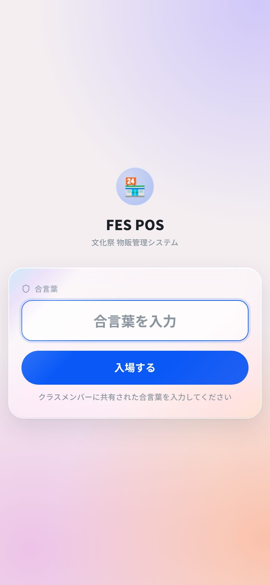
管理者の番号を入れて 次へ を押します。
上に店の名前が出ていれば、設定が正しく読み込まれています。
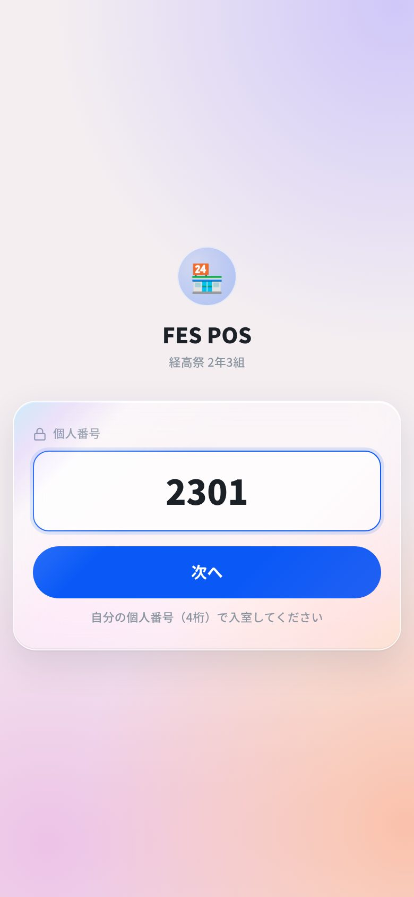
PINを決める画面が出ますが、ここではPINを入れずに、下の青い文字 管理者の復旧コードを使う を押します。
ここでPINを設定すると「承認待ち」になり、承認できる人がいないので使えません（そうなっても、復旧コードを使えばやり直せます）。
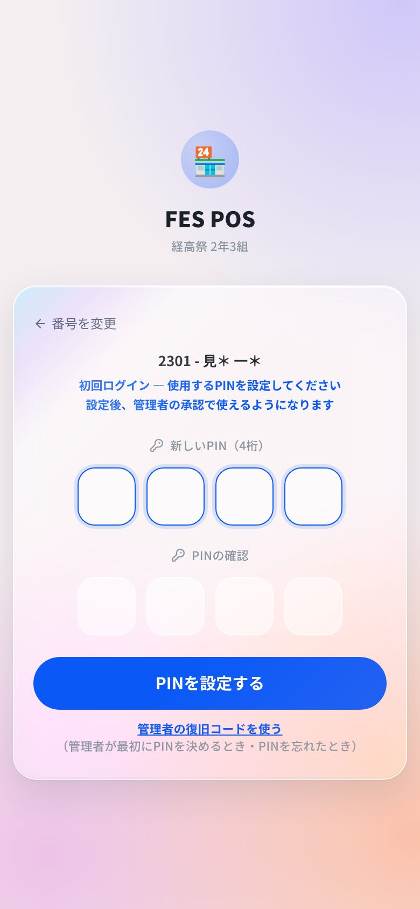
復旧コードは Render にあります。Render のサービスの画面の左にある Environment を開き、
POS_ADMIN_RECOVERY_CODE の値（目のマークで表示）をコピーします。
それを「復旧コード」に貼り付け、新しいPIN（4けた）を2回入れて PINを設定する を押します。
1234・0000・1111・生まれ年のような推測されやすいPINは使えません。
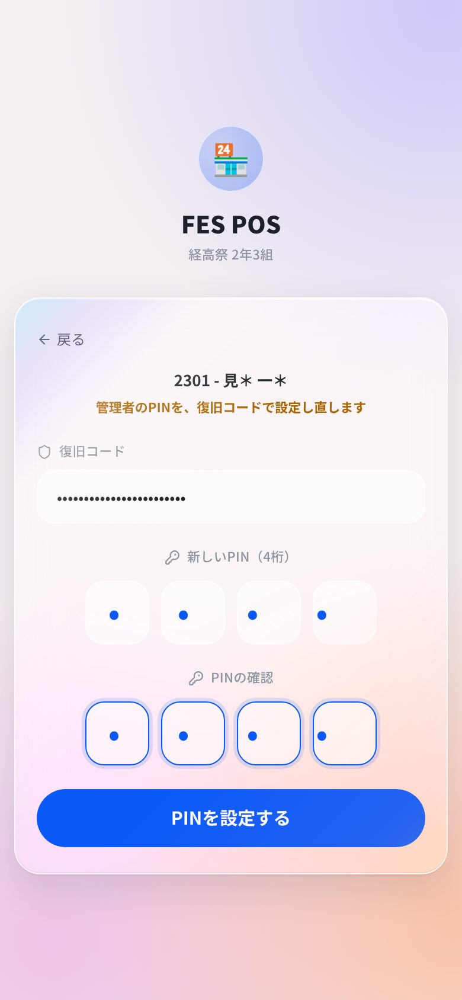
右上に自分の番号と「管理者」が出ていれば成功です。次からは、番号とPINだけで入れます。
まだ商品が無いので、レジには案内だけが出ています。商品は8章で登録します。
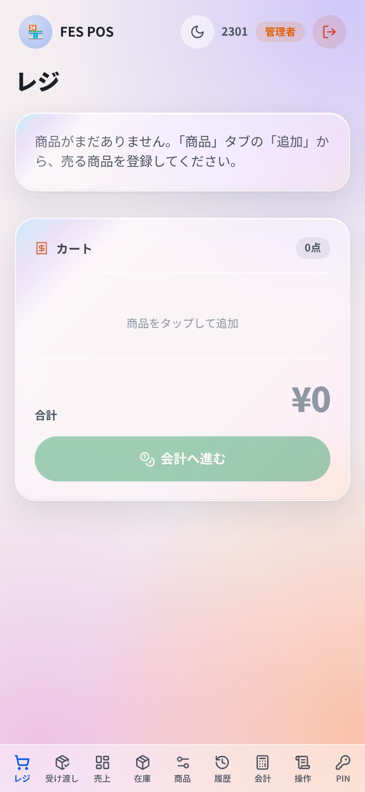
POS_ADMIN_RECOVERY_CODE の右のごみ箱マークを押し、Save Changes を押します
（アプリが1〜2分で再起動します）。ログイン画面に「管理者の復旧コードを使う」が出なくなれば消えています。クラスのみんなは、自分でPINを決めて申請し、管理者が承認すると使えるようになります。成り済ましを防ぐため、承認は本人の画面に出るコードで行います。
アドレスを開き、合言葉 → 自分の番号を入れます。はじめてのときは「初回ログイン」と出るので、 自分で決めたPINを2回入れて PINを設定する を押します。
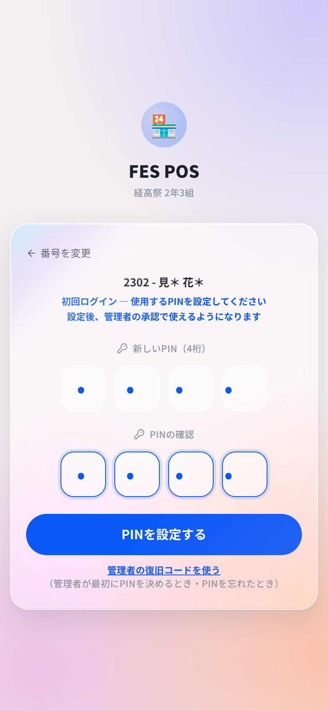
4文字の申請コードが出ます。この画面を管理者に見せます（写真やチャットで送るより、直接見せるのが確実です）。
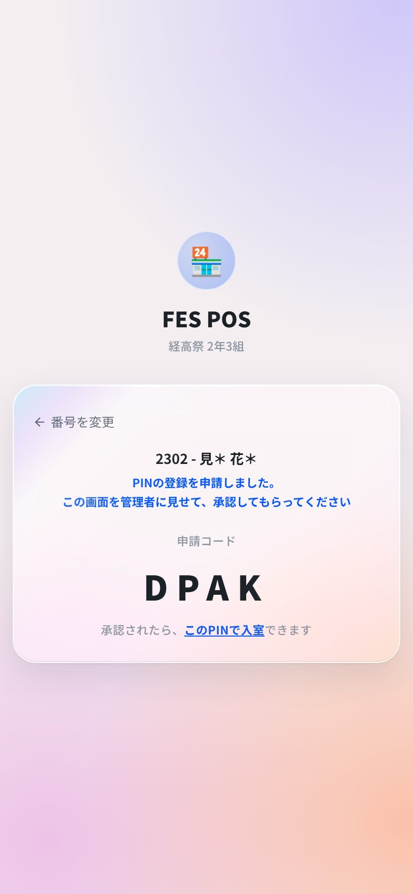
管理者は下の PIN タブを開きます。「承認待ち」に本人の番号と名前が出ているので、本人の画面のコードを入れて 承認 を押します。
そのあとメンバーは、番号とPINで入れるようになります。
コードが合わない申請は承認できません。覚えのない申請は 却下 してください。
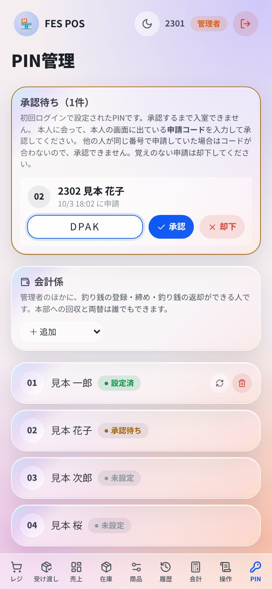
管理者が、商品・在庫・係などを準備します。どれも、あとから何度でも直せます。
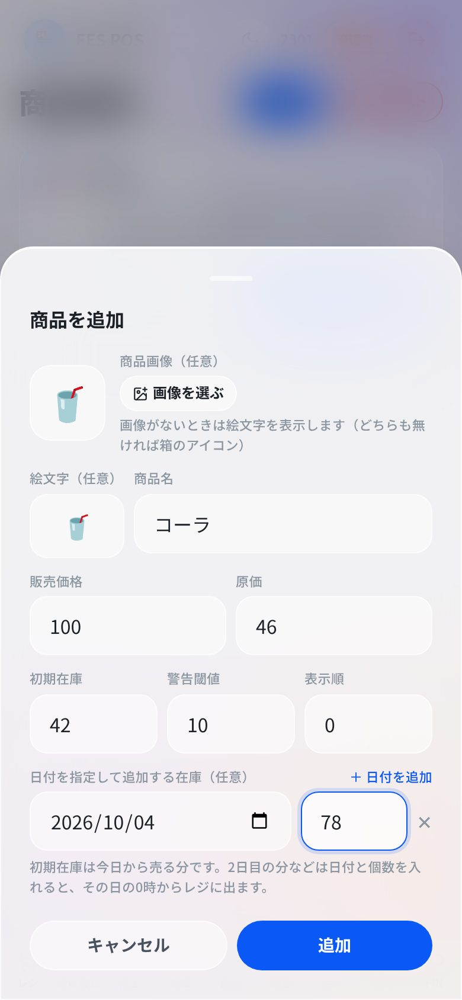
「残」が今日売れる数、青い札（例：10/4から +78）がその日に加わる数です。
手元にある実物の数 ＝「残」＋ 青い札の数 なので、仕入れた数と合っているか確かめます。
日付を指定した在庫は、その日になる前なら × で取り消せます。今日の日付で登録すると、すぐに売れる在庫になるので注意してください。
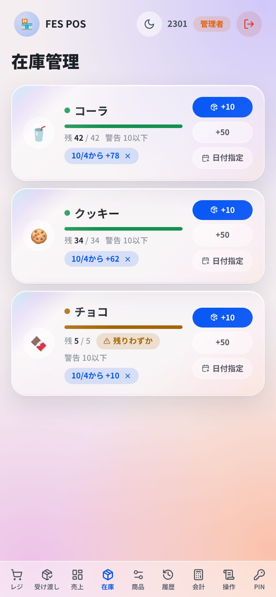
学校に出す収支報告書（仕入帳・売上帳・物品販売報告書）の行事名・団体名・仕入代金の借入金を入れて 保存 を押します。 報告書の日付は自動で入ります。
仕入れたものは「仕入帳」に、保菌検査代などは「控除費目」に記録しておくと、最後に PDF出力 でまとめて印刷できます。
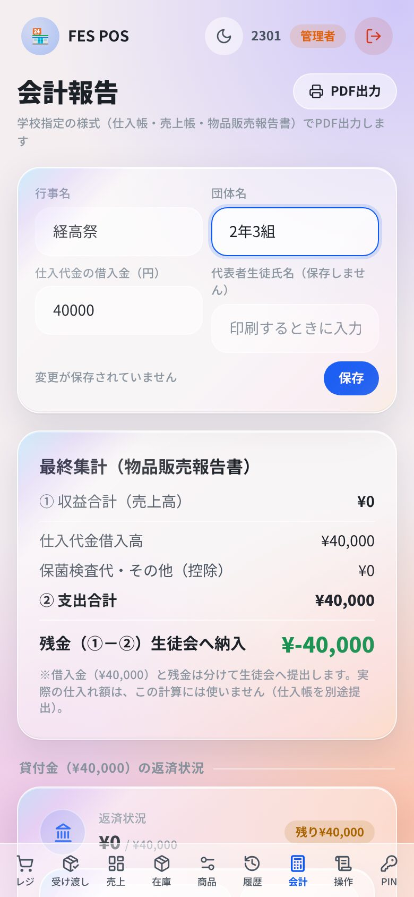
練習用の商品を追加 を押すと、¥100 の練習用の商品が3つ入ります。みんなで会計・受け渡し・取消などを練習します。
終わったら 練習を片付ける を押すと、練習の会計がまとめて消え、売上や在庫は練習の前に戻ります。 本番の前に必ず片付けてください。
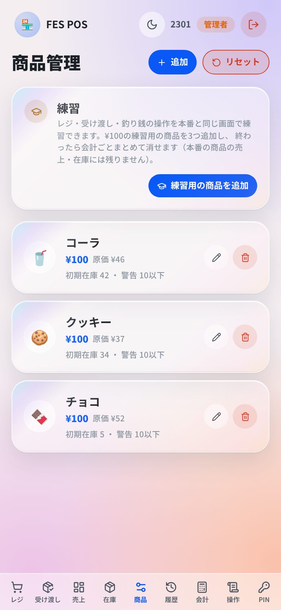
docs のPDF。障害対応手順書の最後にアドレスを書く）2つの方法があります。おすすめは A です。
次の年のクラスが、自分たちのアカウントでこの手順書の2章からやり直します。テンプレートから新しいリポジトリを作るので、 前の年のデータや設定は一切入りません。前の年の人のアカウントにも頼りません。
先生など同じ人がアカウントを管理し続ける場合の方法です。Render の Environment で次を変えて Save Changes を押すだけです。
| 変えるもの | どう変えるか |
|---|---|
DATABASE_URL | 最後の名前だけ変える（例：/fespos → /fespos2027）。新しい空のデータベースで始まります。去年のデータは前の名前のまま残ります |
POS_MEMBERS ／ POS_ADMIN_IDS | 新しいクラスの名簿と管理者 |
POS_ACCESS_CODE | 新しい合言葉（去年の人が入れないように、必ず変える） |
POS_SHOP_NAME | 新しい店の名前 |
POS_ADMIN_RECOVERY_CODE | 16文字以上のでたらめな英数字を追加。新しい管理者が6章の手順で最初のPINを決めます |
後輩が3章の「Use this template」を使えるように、GitHub のテンプレートのページで次を確認してください。
サービスの画面の Logs を開き、赤い文字や Error の行を探します。次のようなメッセージが出ていたら、
Environment でその値を直して Save Changes を押します。
| ログに出る言葉 | 原因と直し方 |
|---|---|
| POS_MEMBERS の「…」が読めません | 名簿の書き方。「番号:名前」をカンマでつないでいるか確認 |
| POS_ADMIN_IDS の … が POS_MEMBERS にありません | 管理者の番号が名簿に無い |
| POS_ACCESS_CODE（合言葉）が設定されていません | 合言葉が空になっている |
Access denied for user | 接続先のユーザー名かパスワードがちがう。TiDB Cloud でパスワードを作り直して入れ直す |
getaddrinfo ENOTFOUND | 接続先のHOSTがちがう（コピーのし忘れ・余分な文字） |
Health check 〜 timed out | ほとんどは接続先のまちがい。上の2つを確認 |
無料プランの休止から起き上がるところです。1分ほど待ってから読み込み直してください。営業中はこうなりません。
Render の Environment で値を変えて Save Changes を押すと、1〜2分で反映されます。 合言葉を変えると、全員がもう一度合言葉を入れることになります。名簿から外した人は、すぐに使えなくなります。
Render の Environment で POS_ADMIN_RECOVERY_CODE を追加（16文字以上のでたらめな英数字）して保存し、
6章の3〜5の手順でPINを決め直します。終わったら必ず消します（6章の6）。
PINを忘れた人は、管理者が PIN タブでリセットします。申請コードが分からなくなった人は、もう一度PINを設定すると新しいコードが出ます。
練習用の商品で練習したなら、商品タブの 練習を片付ける で練習の分だけ消えます。 すべて消したいときは、商品タブの リセット（全データリセット）を使います。商品・売上・在庫・現金の記録・操作ログがすべて消えます（PINと報告書の設定は残ります）。
「障害対応手順書」（docs フォルダのPDF）に、画面ごとの対応と、紙での営業の方法が書いてあります。前もって印刷しておいてください。
決済会社との契約が必要です。準備の方法は docs/cashless-payment.md にあります（くわしい人向け）。設定しなければ現金だけで動きます。
| 名前 | 意味 | 入力 |
|---|---|---|
DATABASE_URL | データベースの接続先（4章）。最後の名前を変えると、空のデータベースで始まる | 必要 |
POS_MEMBERS | 名簿。番号:名前 をカンマでつなげる | 必要 |
POS_ADMIN_IDS | 管理者の番号（2人ならカンマでつなげる） | 必要 |
POS_ACCESS_CODE | 合言葉 | 必要 |
POS_SHOP_NAME | 店の名前（ログイン画面に表示） | あるとよい |
JWT_SECRET | ログインの記録に付ける署名の鍵。32文字以上。変えると全員ログインし直し | 自動 |
POS_ADMIN_RECOVERY_CODE | 管理者が最初のPINを決める・忘れたPINを決め直すためのコード。16文字以上。最初のPINを決めたら必ず消す | 自動 |
NODE_VERSION | プログラムを動かす道具のバージョン。変えない | 自動 |
TURNSTILE_SITE_KEYTURNSTILE_SECRET_KEY | ロボットよけの確認（Cloudflare）を付けるときだけ。2つそろえて設定する | なくてよい |
| 言葉 | 意味 |
|---|---|
| リポジトリ | GitHub にあるプログラムの置き場所（フォルダのようなもの） |
| テンプレート | コピーして使うための元のリポジトリ |
| デプロイ | プログラムを Render で動かせる状態にすること。設定を変えると自動でやり直される |
| 環境変数（Environment） | Render に入れておく設定の値。名簿や合言葉など、プログラムに書いてはいけないものをここに入れる |
| クラスタ | TiDB Cloud のデータベースの入れ物 |
| 接続先（DATABASE_URL） | データベースの住所・ユーザー名・パスワードをまとめた1行の文字 |
| PIN | 1人ずつの4けたの暗証番号 |
| 復旧コード | 管理者がPINを決めるための長いコード（Render が自動で作る） |
| GitHub のリポジトリのアドレス | |
|---|---|
| アプリのアドレス（Render） | |
| TiDB Cloud のクラスタの名前 | |
| データベースの名前（接続先の最後） | |
| 管理者の番号 | |
| 会計係の番号 | |
| 各サービスに登録したメールアドレス |
合言葉・PIN・パスワード・接続先・復旧コードは、この紙に書かないでください。